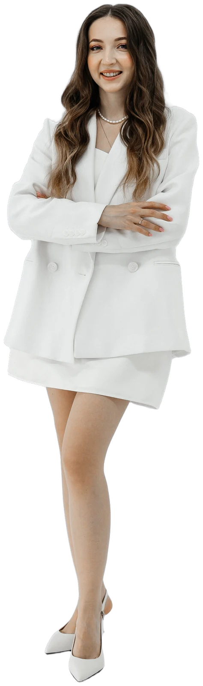
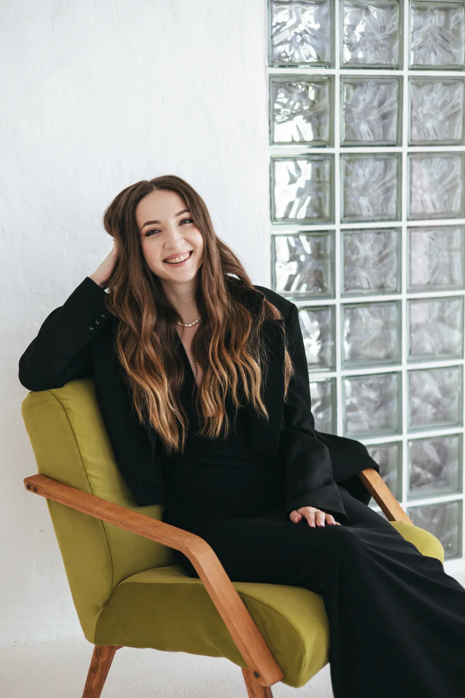
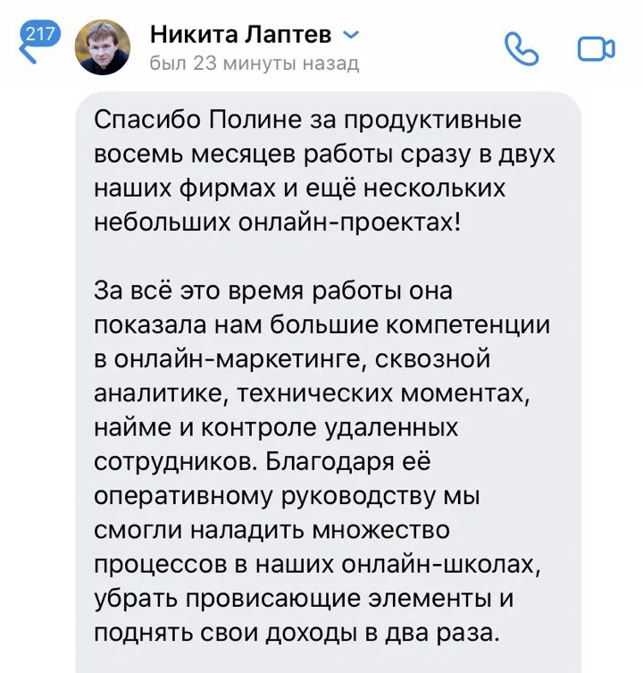
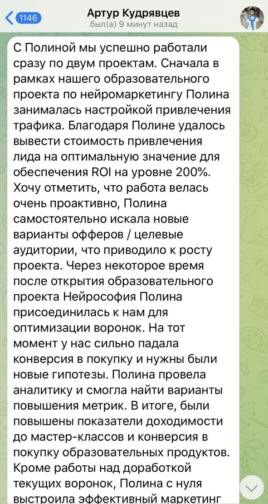
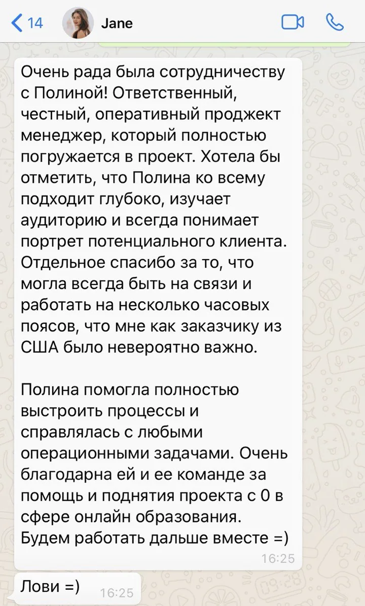
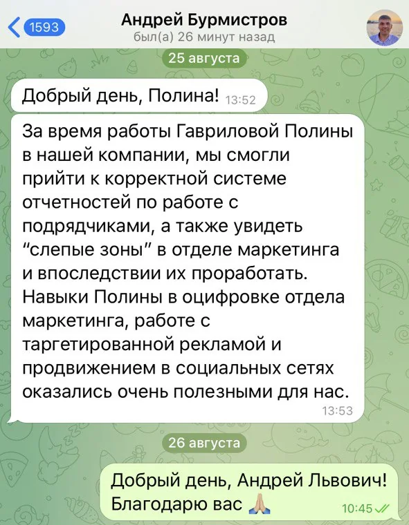
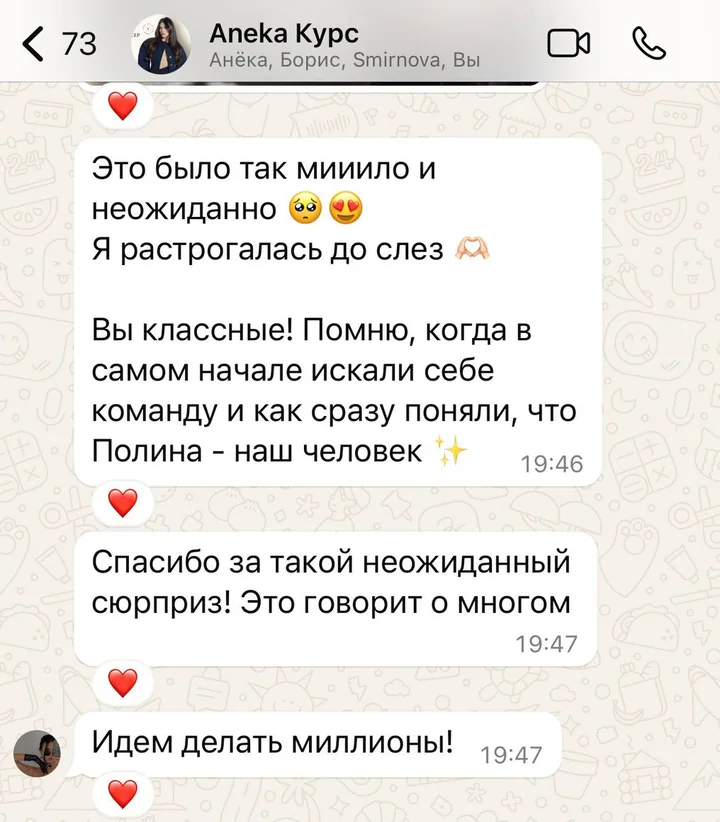

Разбираю рекламу, воронки и запуски.
Чиню то, что мешает системно расти
*Кнопка откроет Telegram. Если он не открылся, напишите мне на gavrilovp.work@gmail.com
Кому я полезна
К 2026 году рынок изменился: то, что раньше растило школы, перестало работать. Узнали себя — давайте разберёмся
делаете всё больше, а выручка стоит на месте или падает, и всё держится на вас
реклама не окупается, и непонятно, где утекают деньги
старые перестали работать или их не было вовсе, а как строить их в 2026 году, непонятно
запуски на свою аудиторию из раза в раз дают ту же выручку или меньше, а ученики не покупают ваши продукты системно
команда делает руками то, что уже умеют ИИ-агенты и автоматизация
Было → стало
Выручка школы до начала работы со мной и после — без округлений в свою пользу
Листайте вправо, чтобы посмотреть все девять кейсов →
выручка 7 млн в месяц
отрицательная рентабельность
автоворонки с ROMI минус 150–200%
выручка 30–35 млн в месяц
положительная рентабельность
автоворонки с ROMI 200%+
выручка 10 млн в месяц
выручка 43 млн за месяц, из которых 27 млн — запуск на базу и 16 млн — холодная реклама при вложениях 7 млн
Ранее у эксперта были запуски, но мы стартовали с нуля. Не было ни автовебинара, ни системных запусков
за несколько месяцев — выручка $50 000 в месяц
ROMI больше 1000%
выручка 5 млн в месяц
средний чек 50 000 ₽
выручка 11,3 млн в месяц
средний чек около 100 000 ₽
выручка 5 млн за запуск
только самозапуски эксперта
офлайн-встреч не было
выручка 14 млн за запуск
офлайн-мероприятия в Сочи на 200 и 500 человек
выручка 2 млн в месяц
воронки сломались
тяжёлое время после ковида
выручка 8 млн в месяц
воронки собраны заново
эксперт раньше не запускался
аудитория смешанная, русскоязычная и американская
курс делали именно на русском
выручка 7 млн в месяц
выручка 2–3 млн в месяц
один вебинар на холодный трафик
аналитики нет
в маркетинге никого, кроме меня
выручка 18–25 млн в месяц
вебинары на разные темы
регулярные акции на тёплую аудиторию
руководитель отдела трафика и проджект в команде
аналитика по всем источникам
выручка 20 млн за месяц
выручка 30 млн за месяц

Что я беру на себя
Кому-то нужно выстроить весь маркетинг, кому-то — вникнуть в одну его часть. Умею и то и другое
собираю новые и чиню старые, чтобы школа продавала каждый день, а не только в запуск
растим её платной и органической рекламой, контентом и запусками, зарабатываем на ней повторными покупками. Считаем не цифру в базе, а живых людей, до которых доходят наши рассылки в почте и ботах
не просмотры ради просмотров, а контент, который прогревает, вызывает доверие и доводит до покупки
упрощаю работу команды и экономлю деньги на подрядчиках и сотрудниках
все четыре направления вместе, с командой и аналитикой
Начинаем с созвона — часто школе нужно совсем не то, что кажется на старте. Сначала раскладываем всё по полочкам, потом решаем
*Кнопка откроет Telegram. Если он не открылся, напишите мне на gavrilovp.work@gmail.com
Обо мне
Полина Бурковская · маркетолог онлайн-школ
Начинала с рекламы и автоворонок, была руководителем отдела маркетинга, операционным директором и продюсером своих проектов. Сейчас отвечаю за запуски в онлайн-школе DIVA и каждый день внедряю в работу ИИ-агентов и вайбкодинг
У меня высшее юридическое образование, разбираюсь в праве и налогах. Поэтому слежу не только за тем, чтобы школа зарабатывала больше, но и за тем, куда и сколько она тратит и всё ли юридически чисто. Сейчас это особенно важно

Отзывы
Скриншоты переписки — как есть, без правок

Никита Лаптевпереписка во ВКонтакте

Артур Кудрявцевпереписка в Telegram

Jane, заказчик из СШАпереписка в WhatsApp

Андрей Бурмистровпереписка в Telegram

Анёка Айтимовачат проекта в WhatsApp
Связаться
Напишите в Telegram пару слов о школе — договоримся о созвоне и разберёмся, что вам на самом деле нужно
Расскажите, что сейчас происходит со школой и что болит. Отвечу в течение суток
*Кнопка откроет Telegram. Если он не открылся, напишите мне на gavrilovp.work@gmail.com
© 2026 Полина Бурковская